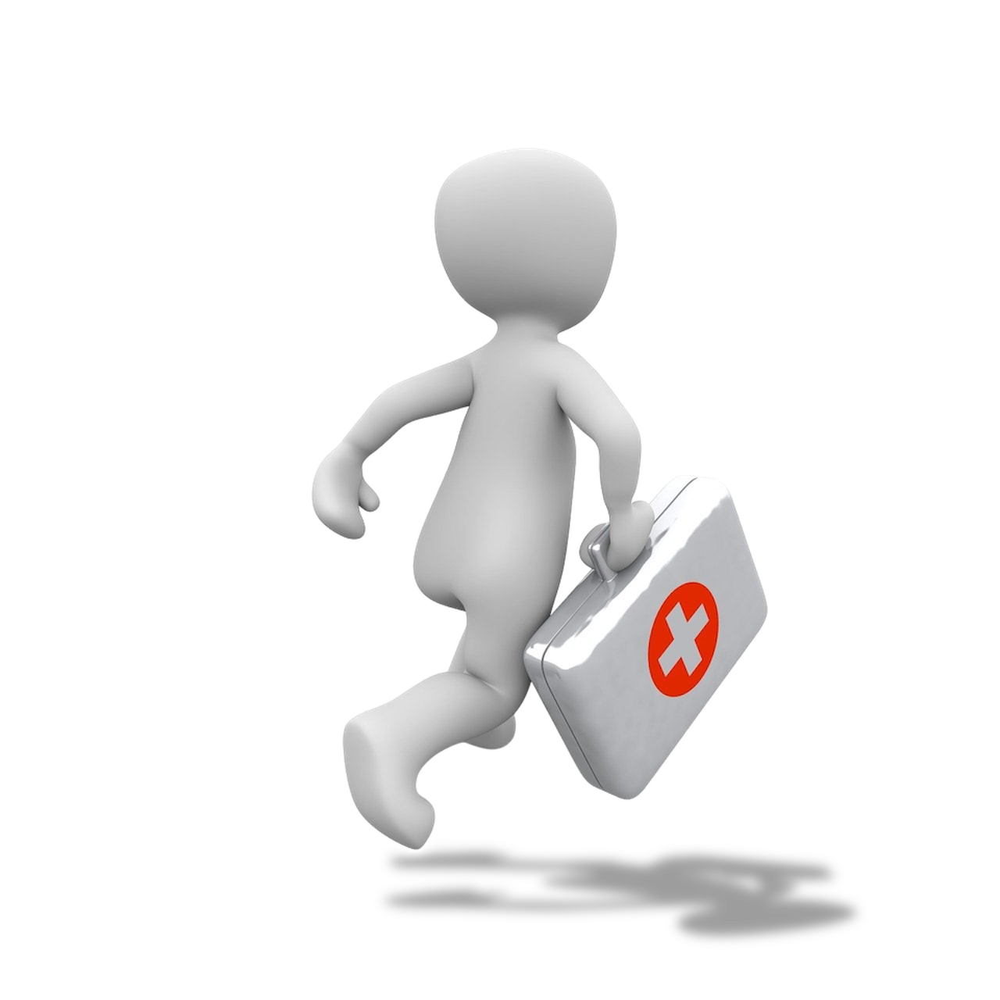

First Aid knowledge is invaluable for both you as the individual and for your community. It enables you to assist persons who become injured in the event of an accident or emergency situation until help arrives. First Aid skills can be applied in the home, the workplace or in public locations, therefore the more First Aid certified people there are in a community the safer that community becomes. Becoming First Aid certified not only benefits you as an individual but it extends to your family, friends, co-workers and even the community as a whole. As unpleasant as it is to talk about, accidents and emergency situations are not completely preventable or unavoidable. If an accident happens in the workplace, in your home or in a public space, being a helpless witness to an emergency situation can potentially worsen the situation. This is why it is very important for as many people as possible to have at least a basic knowledge of First Aid.
